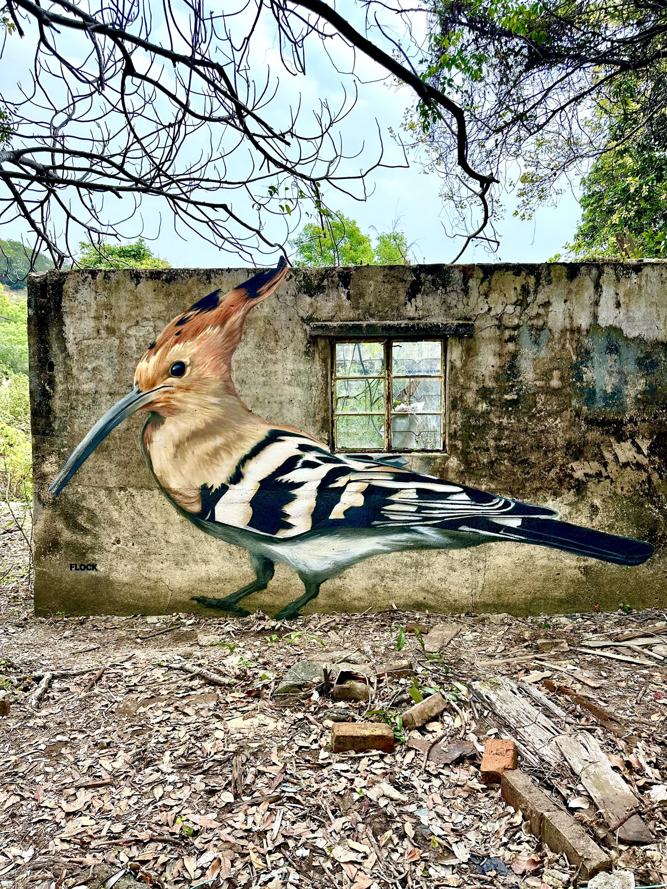

Flock started with a simple idea: take Lantau's empty, crumbling village houses and give them back to the birds that live around them. Every mural is a native Hong Kong species, painted big, in spray paint, by street artist Aspire. Every one was paid for by people who love this island.